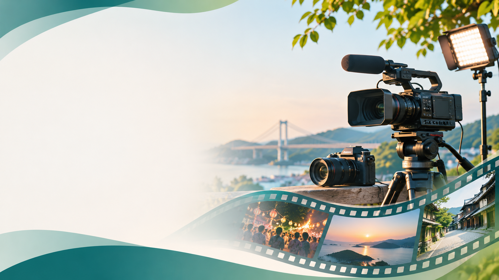

企業・店舗のPR動画
会社やお店の雰囲気、こだわり、取り組みなどを紹介する映像を制作します。

VIDEO & COMMERCIAL PRODUCTION
企業・店舗のPRから地域イベントの記録まで、映像づくりをお手伝いします。
OUR SERVICES
ロトロでは、地域の魅力や企業・お店の商品、サービスの価値を映像で伝えるお手伝いをしています。目的やご予算、公開したい媒体などを伺いながら、内容をご相談のうえ進めます。
会社やお店の雰囲気、こだわり、取り組みなどを紹介する映像を制作します。
地域の催しや祭り、発表会など、その日の様子や大切な瞬間を映像に残します。
YouTubeでの発信に向けた撮影・編集などを、ご希望に応じてご相談いただけます。
テレビやWebでの広告展開を想定したCMの企画・制作についてご相談を承ります。
商品の特徴やサービスの内容、利用するメリットなどを映像で紹介します。
イベントや発表会などのライブ配信について、企画から当日の運営までご相談いただけます。
HOW TO START
作りたい映像や目的、希望時期などをお知らせください。
内容・撮影場所・納期・ご予算などを確認し、制作内容をご提案します。
内容とお見積りにご納得いただいたうえで、制作を進めます。
CONTACT
「こんな映像は作れる？」「まずは費用感を知りたい」など、お気軽にご相談ください。内容を確認後、担当者よりご連絡します。